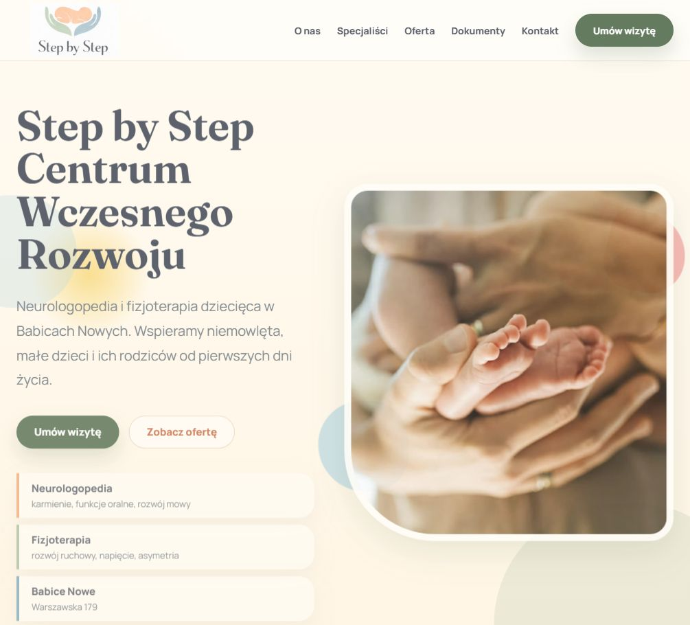
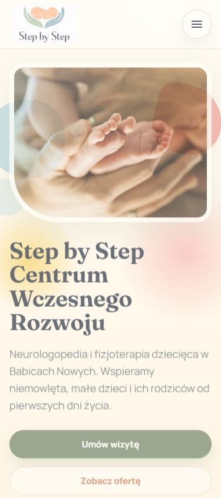
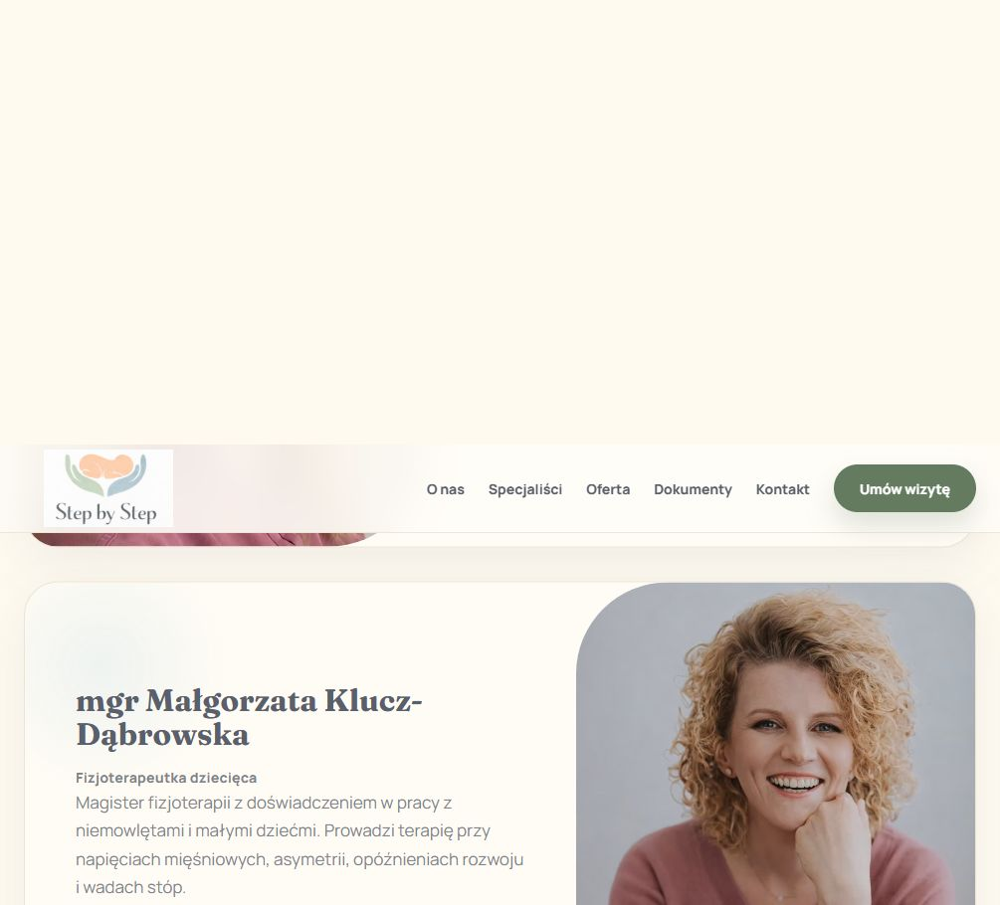
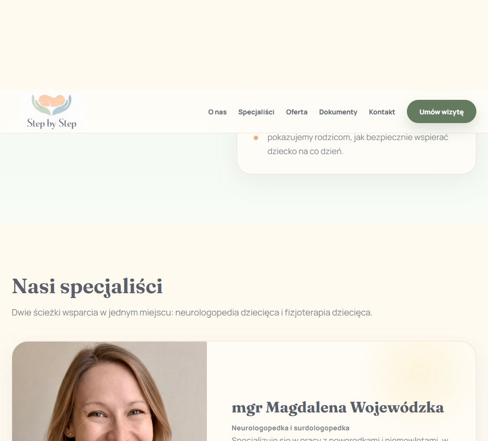

GitHub Pages pokazuje statyczny podglad. Pelny motyw PHP wymaga WordPressa, np. lokalnego Dockera, hostingu WordPress albo tymczasowego srodowiska testowego.
Statyczny podglad motywu WordPress do publikacji przez GitHub Pages.




GitHub Pages pokazuje statyczny podglad. Pelny motyw PHP wymaga WordPressa, np. lokalnego Dockera, hostingu WordPress albo tymczasowego srodowiska testowego.